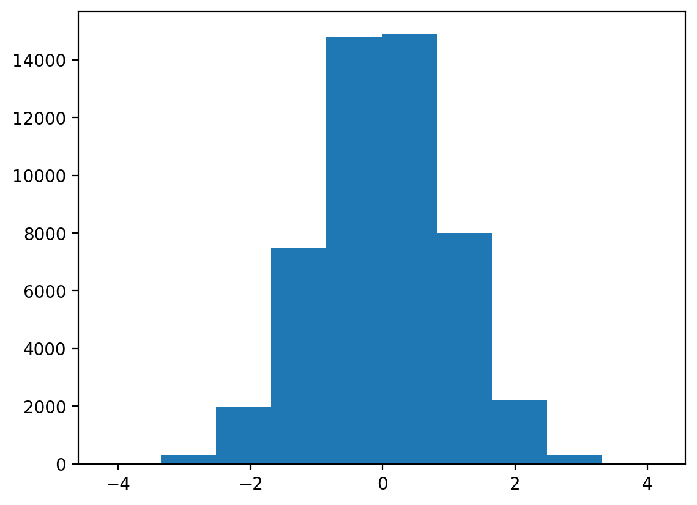
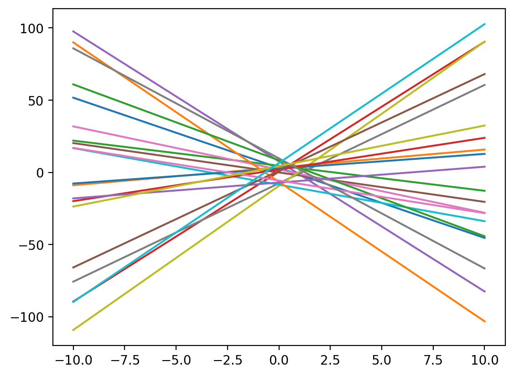
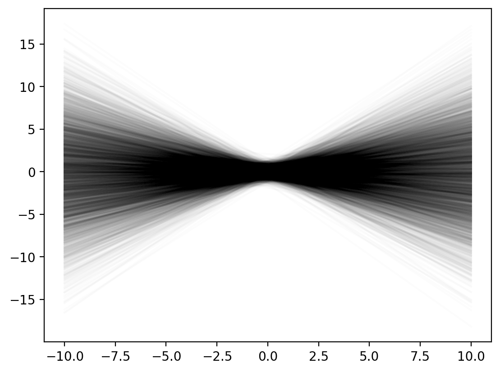
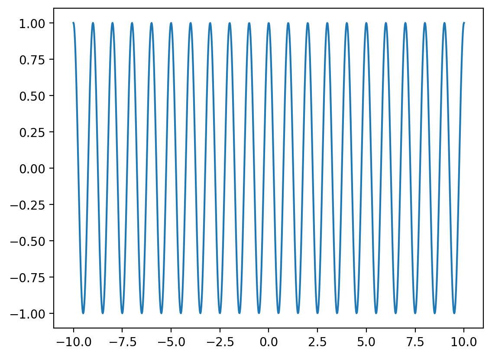
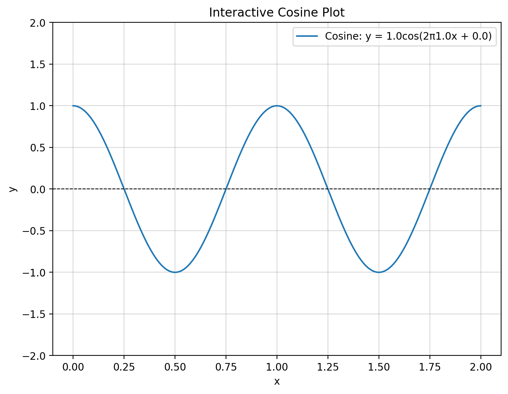
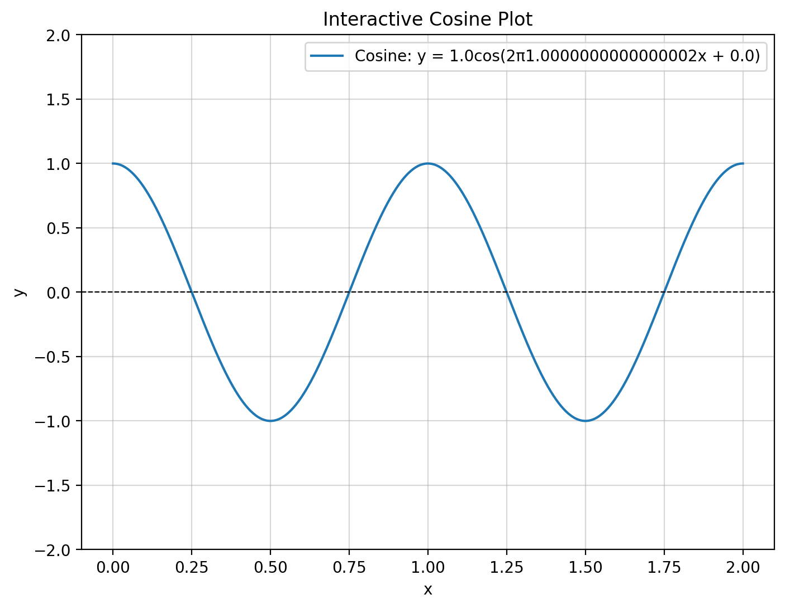
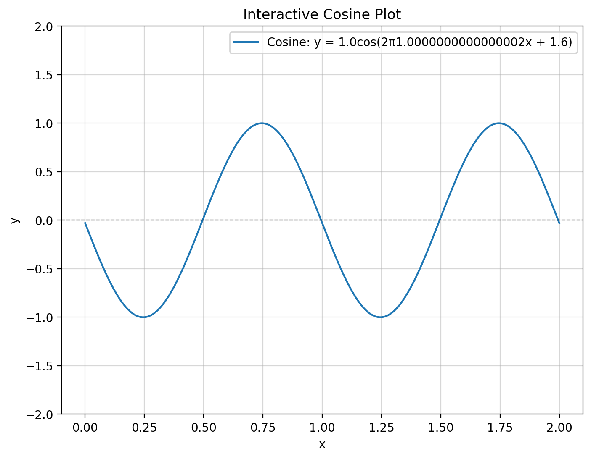
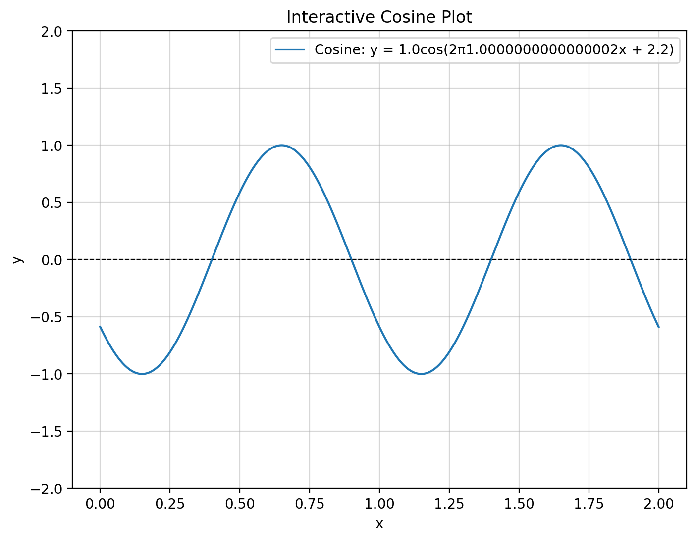
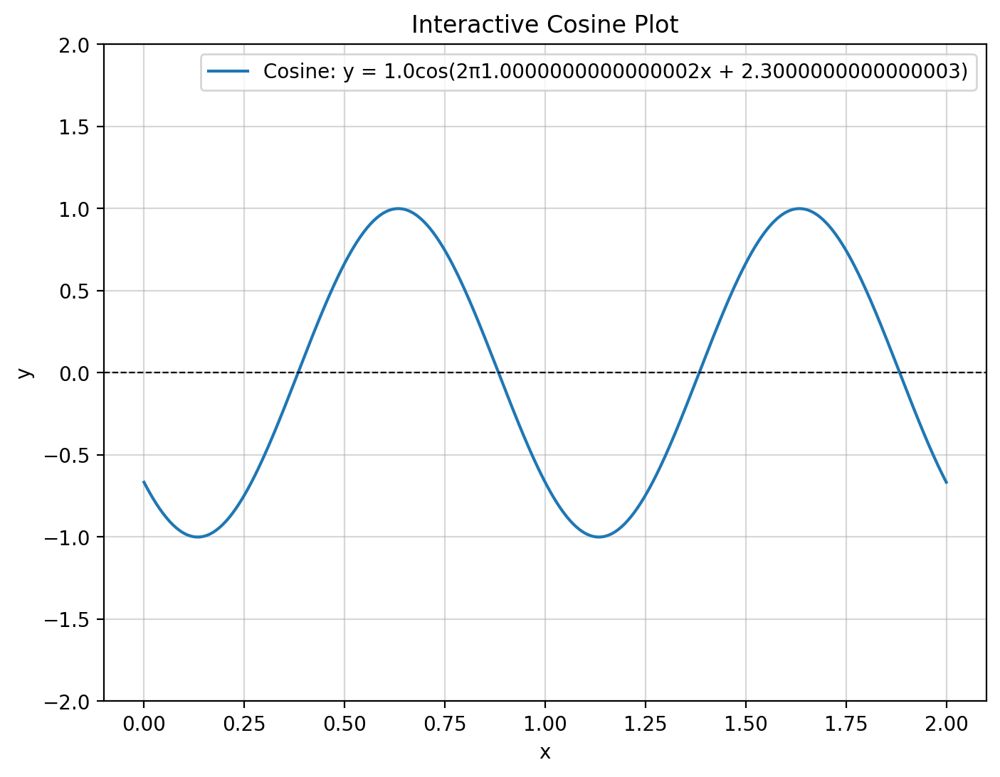

import matplotlib.pyplot as plt
import numpy as np
import torch
import pandas as pd
# Retina mode
%matplotlib inline
%config InlineBackend.figure_format = 'retina'Set
ML
A = np.linspace(0, 1, 100)
A = np.arange(0, 1, 0.01)# uncountable set
x = np.random.rand(100000000)
#print(x)
np.unique(x).size100000000# Set of lines in 2d
def line_fx(x, m, c):
return m*x + c
line_fx(1, 2, 3)5x_lin = np.linspace(-10, 10, 100)
y_lin_2_3 = line_fx(x_lin, 2, 3)
plt.plot(x_lin, y_lin_2_3)
from ipywidgets import interact
import ipywidgets as widgets
def plot_line(m, c):
x_lin = np.linspace(-10, 10, 100)
y_lin = line_fx(x_lin, m, c)
plt.figure(figsize=(8, 6))
plt.plot(x_lin, y_lin, label=f'Line: y = {m}x + {c}')
plt.axhline(0, color='black', linewidth=0.8, linestyle='--')
plt.axvline(0, color='black', linewidth=0.8, linestyle='--')
plt.grid(alpha=0.5)
plt.legend()
plt.title("Interactive Line Plot")
plt.xlabel("x")
plt.ylabel("y")
plt.ylim(-10, 10)
plt.show()
# Interactive widget
interact(plot_line,
m=widgets.FloatSlider(value=1, min=-10, max=10, step=0.1, description='Slope (m)'),
c=widgets.FloatSlider(value=0, min=-10, max=10, step=0.1, description='Intercept (c)'));samples_uniform = np.random.rand(50000)
plt.hist(samples_uniform)(array([5052., 5003., 4898., 4953., 4985., 4972., 5168., 5048., 4995.,
4926.]),
array([2.10990213e-05, 1.00018664e-01, 2.00016229e-01, 3.00013794e-01,
4.00011359e-01, 5.00008924e-01, 6.00006489e-01, 7.00004054e-01,
8.00001619e-01, 8.99999184e-01, 9.99996749e-01]),
<BarContainer object of 10 artists>)
samples_uniformarray([0.41712539, 0.07813842, 0.71688711, ..., 0.59229709, 0.73228883,
0.59211032])samples_normal = np.random.randn(50000)
plt.hist(samples_normal)(array([ 23., 359., 2341., 8280., 14706., 14350., 7548., 2046.,
325., 22.]),
array([-4.0372689 , -3.22368357, -2.41009824, -1.59651291, -0.78292758,
0.03065774, 0.84424307, 1.6578284 , 2.47141373, 3.28499906,
4.09858438]),
<BarContainer object of 10 artists>)
samples_normal[:50]array([-2.31058669, -0.79714906, -0.21301392, 1.22113916, 1.98146526,
0.42204773, -0.54724348, 0.50835985, -0.2634123 , -0.83591474,
-0.49837997, -0.30704624, -0.72767871, -0.24563129, 1.5724571 ,
-1.03287692, -0.06814209, -1.50996318, -0.0949353 , -0.63395993,
-1.46535197, 0.67456067, 1.30095979, -0.13257839, 0.59426199,
-0.96411211, 0.4829196 , -0.68204543, -0.79151331, 1.50295182,
0.59165297, -0.59026297, -0.31318705, -1.53349941, -1.31823789,
0.95281806, -0.23830599, 1.12398481, 0.93111563, -1.03672487,
-0.16476399, 2.01896697, 1.20259229, 1.71239189, -0.83335455,
-1.40865063, 0.36185738, -0.71034706, 1.23774529, 1.18004862])# Plot some 20 lines for random m and c
m = np.random.rand(20)*20 - 10
c = np.random.rand(20)*20 - 10
for i in range(20):
y_lin = line_fx(x_lin, m[i], c[i])
plt.plot(x_lin, y_lin, label=f'Line: y = {m[i]:.2f}x + {c[i]:.2f}')
np.random.randn?Signature: np.random.randn(*args)
Docstring:
randn(d0, d1, ..., dn)
Return a sample (or samples) from the "standard normal" distribution.
.. note::
This is a convenience function for users porting code from Matlab,
and wraps `standard_normal`. That function takes a
tuple to specify the size of the output, which is consistent with
other NumPy functions like `numpy.zeros` and `numpy.ones`.
.. note::
New code should use the
`~numpy.random.Generator.standard_normal`
method of a `~numpy.random.Generator` instance instead;
please see the :ref:`random-quick-start`.
If positive int_like arguments are provided, `randn` generates an array
of shape ``(d0, d1, ..., dn)``, filled
with random floats sampled from a univariate "normal" (Gaussian)
distribution of mean 0 and variance 1. A single float randomly sampled
from the distribution is returned if no argument is provided.
Parameters
----------
d0, d1, ..., dn : int, optional
The dimensions of the returned array, must be non-negative.
If no argument is given a single Python float is returned.
Returns
-------
Z : ndarray or float
A ``(d0, d1, ..., dn)``-shaped array of floating-point samples from
the standard normal distribution, or a single such float if
no parameters were supplied.
See Also
--------
standard_normal : Similar, but takes a tuple as its argument.
normal : Also accepts mu and sigma arguments.
random.Generator.standard_normal: which should be used for new code.
Notes
-----
For random samples from the normal distribution with mean ``mu`` and
standard deviation ``sigma``, use::
sigma * np.random.randn(...) + mu
Examples
--------
>>> np.random.randn()
2.1923875335537315 # random
Two-by-four array of samples from the normal distribution with
mean 3 and standard deviation 2.5:
>>> 3 + 2.5 * np.random.randn(2, 4)
array([[-4.49401501, 4.00950034, -1.81814867, 7.29718677], # random
[ 0.39924804, 4.68456316, 4.99394529, 4.84057254]]) # random
Type: method# Plot some 20 lines for random m and c
N = 5000
m = np.random.randn(N)*0.5
c = np.random.randn(N)*0.5
for i in range(N):
y_lin = line_fx(x_lin, m[i], c[i])
plt.plot(x_lin, y_lin, label=f'Line: y = {m[i]:.2f}x + {c[i]:.2f}',
color='k', alpha=0.01)
# Set of cosines with varying phase (fixed amplitude and frequency)
def cosine_fx(x, A=1, f=1, phi=0):
return A*np.cos(2*np.pi*f*x + phi)x_lin = np.linspace(-10, 10, 1000)
y_cos_1_1_0 = cosine_fx(x_lin, 1, 1, 0)
plt.plot(x_lin, y_cos_1_1_0)
def plot_cosine(A, f, phi):
x = np.linspace(0, 2, 500) # x range for visualization
y = cosine_fx(x, A, f, phi)
plt.figure(figsize=(8, 6))
plt.plot(x, y, label=f'Cosine: y = {A}cos(2π{f}x + {phi})')
plt.axhline(0, color='black', linewidth=0.8, linestyle='--')
plt.grid(alpha=0.5)
plt.legend()
plt.title("Interactive Cosine Plot")
plt.xlabel("x")
plt.ylabel("y")
plt.ylim(-2, 2)
# Interactive widget
interact(plot_cosine,
A=widgets.FloatSlider(value=1, min=0.1, max=2, step=0.1, description='Amplitude (A)'),
f=widgets.FloatSlider(value=1, min=0.1, max=5, step=0.1, description='Frequency (f)'),
phi=widgets.FloatSlider(value=0, min=0, max=2*np.pi, step=0.1, description='Phase (φ)'));





# Set datastructure in Python
A = {1, 2, 3, 4, 5}
print(A, type(A)){1, 2, 3, 4, 5} <class 'set'>A = set([1, 2, 3, 4, 5])
print(A, type(A)){1, 2, 3, 4, 5} <class 'set'># unique elements
A = {1, 2, 3, 4, 5, 1, 2, 3, 4, 5}
print(A, len(A)){1, 2, 3, 4, 5} 5# Can set contain a set?
A = {1, 2, 3}
for a in A:
print(a)1
2
3# why below code doesn't work? homework
A_star = {{1, 2, 3, 4, 5}, 6, 7}
```{=html}
————————————————————————— TypeError Traceback (most recent call last) Cell In[118], line 2 1 # why below code doesn’t work? homework —-> 2 A_star =